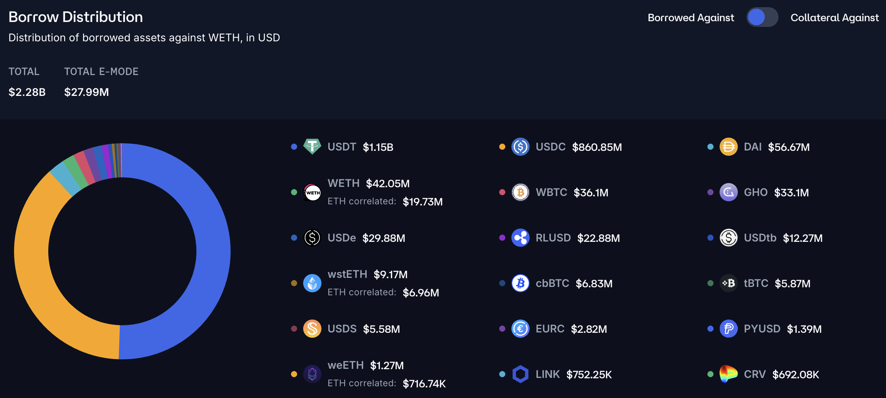
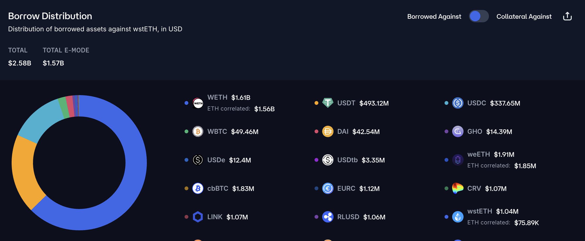
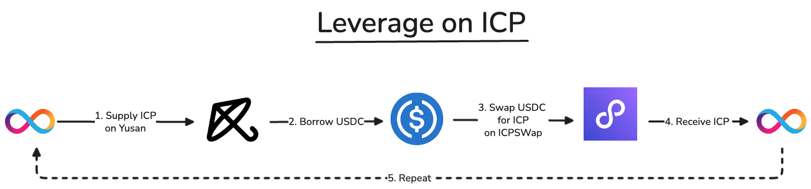
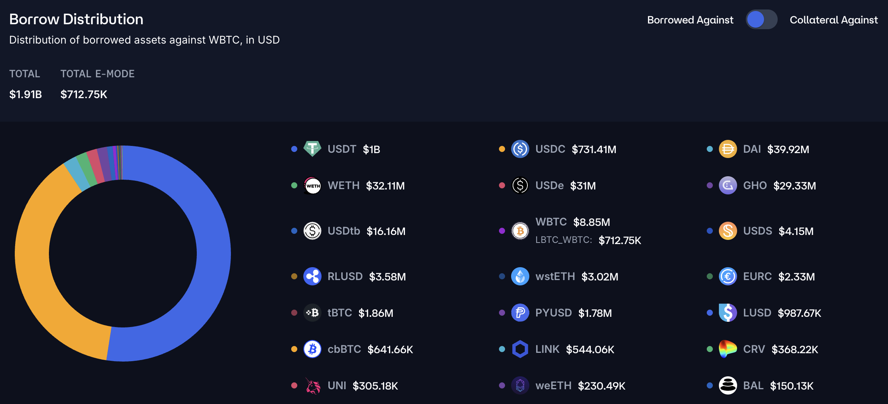

Our growth strategy is to deliver yield on products with no prior yield in iterative steps, building one on top of the other, creating liquidity and meeting users' needs at every step of the way.
USDC Yield
In leading protocols like AAVE, stablecoins represent half of the borrows and a third of the deposits. The demand for stablecoins comes from borrowers seeking liquidity against their volatile assets. This demand is currently not being met on ICP.
On Ethereum, against the base asset of the chain (WETH), we can see 90% of the borrows putting WETH as collateral are for stablecoins.

The same can be seen for yield-bearing assets like wstETH, where stablecoins account for 40% of the borrows:

Meeting this demand would push USDC/USDT yield to around 5%. The chain currently lacks a money market, leaving users with no solutions for sustainable and safe stablecoin yield.
ICP Yield
The next pressure is the demand for going long on ICP by people taking leverage. Part of the yield would be from users seeking liquidity, the other part from users looping for leverage. You will be able to achieve a 5x ICP exposure by depositing ICP, borrowing USDC, buying more ICP, and so on.

You can take even larger leverage by using nICP as collateral. Given nICP yield is around 14%, if ICP goes sideways, the yield of nICP would pay off the debt it accrues.
BTC Leverage
With the deep partnership with OneSec (same team), we can offer a BTC-focused product once we have enough stablecoin TVL, allowing people from BTC to loop and take longs on their BTC.

Users get their own BTC address, to which they can deposit BTC and then use on the platform. Facilitating with a BTC address lets us address a deeper market.
Smart-Yield
Yusan smart-yield will balance your collateral between the liquidation pool and the lending pool. The liquidation pool should have good APY per below:
Most liquidations are stablecoins:
But they liquidate WETH (reinforcing the demand to be liquid on the main asset of the network):
This mechanism allows us to take more risks on the platform as liquidations are done automatically and we tap into the full TVL rather than relying on off-chain MEV.